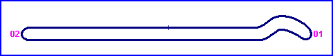
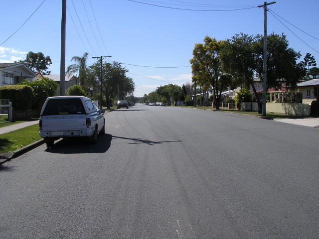
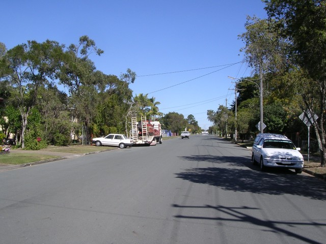

| Map of circuit location & Aerial photo of circuit |
Strathpine, Australia
| Type: | Airfield Circuit | |
| Length: | 1.400 Miles / 2.253 km | |
| Used: | 195?-1960 | |
| Photos Taken: | 8th August, 2005 | |
After the end of the second world war, the Queensland Motor Sporting Club established drag racing on this old bitumen airstrip. Circuit racing was later organised, running up and down the runway. In 1953, the southern loop was introduced, with this been paved two years later. The final meeting at the circuit was held in 1960, in the face of potential competition from the new Lakeside circuit.
The area was substantially redevelped for residental use in the sixties. Today, the only remaining clues as to its history are to be found in the local street names, which commemorate WW2 military aircraft. The original airstrip now forms the basis of Spitfire Avenue.

Numbers on the map represent the location where the photographs were taken. Scroll
down to view photos.
Return to racingcircuits.net's Photo Archive Main Index

1 - Spitfire Avenue, South West end wiggle

2 - Spitfire Avenue, North East end
Photographs and information kindly supplied by Neil Fackerell